← 返回阅读库 · 原论文目录
论文讲解阅读文档 · 论文精读 · v255
突破Transformer！交大首发「类人脑」大模型BriLLM
视频时长 00:11:09；讲解文字 3,502 字符；提取讲解画面 156 张。按视频原顺序阅读，每段文字保留时间戳。
文字来自整段视频的自动语音转写，按自然停顿分段，并与 PPT / 论文页面 / 演示画面对齐。未将讲解压缩为摘要；术语、数字和口述公式请结合画面及原论文核对。 阅读稿已校正规范部分明确术语误识别；原始逐字稿和每处修改记录另行保留。
讲解画面为源视频截图（640×360），不是可编辑 PPT 文件。全片按每秒 2 帧扫描内容变化，逐步展开页保留；连续动画保留代表画面。清晰度受源视频限制。
下载完整资料包 · 含离线 HTML、PDF、Word、全部 PPT 画面和字幕。
原论文与材料
BriLLM: Brain-inspired Large Language Model · 下载完整 PDF（12 页）
按时间阅读
00:00:00–00:00:03 · 画面 001
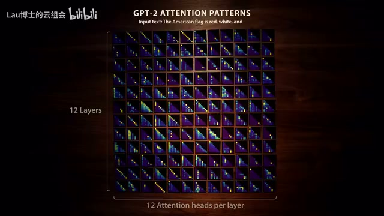
00:00:00–00:00:03 · 画面 001当大模型还在为处理更长文本扩充万亿参数时，人类大脑却能在稳定的生理消耗下高效存储数十年的记忆与知识。今天要精读的论文来自上海交大，它彻底脱离了 Transformer 的架构，打造出全新的类脑大语言模型 BriLLM。它精准解决了传统大模型的三大核心局限：1.自注意力的平方级算力消耗；2.中间层逻辑不可解释的黑箱问题。
00:00:03–00:00:06 · 画面 002
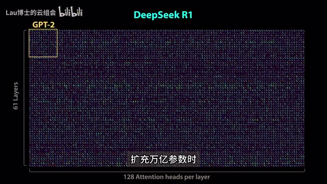
00:00:03–00:00:06 · 画面 00200:00:06–00:00:07 · 画面 003
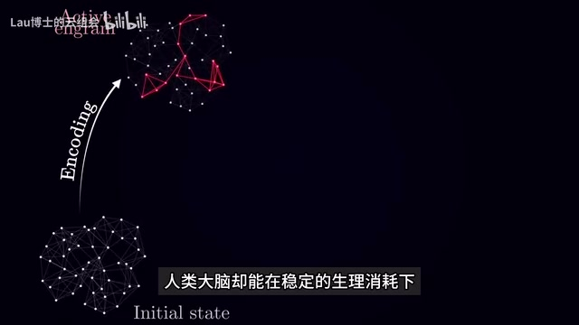
00:00:06–00:00:07 · 画面 00300:00:07–00:00:11 · 画面 004
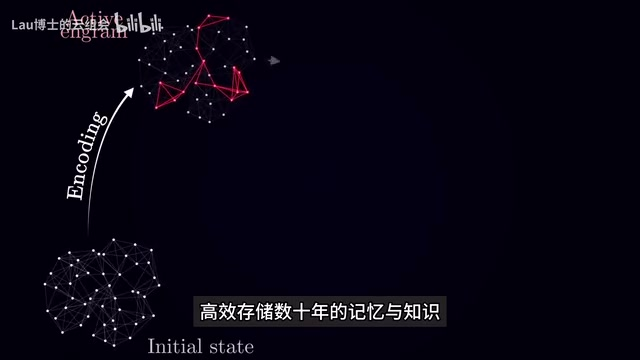
00:00:07–00:00:11 · 画面 00400:00:11–00:00:14 · 画面 005
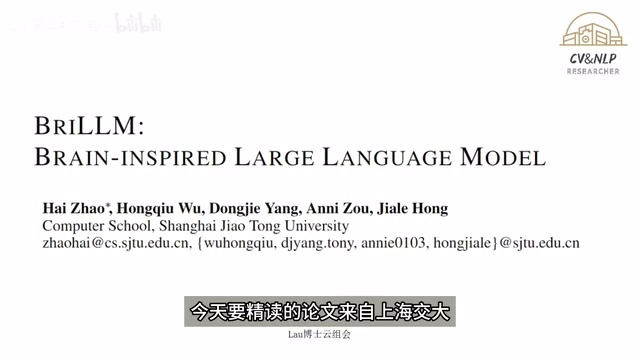
00:00:11–00:00:14 · 画面 00500:00:14–00:00:16 · 画面 006
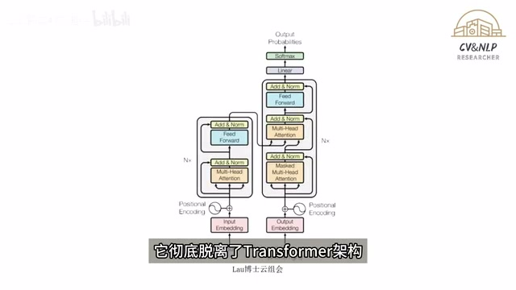
00:00:14–00:00:16 · 画面 00600:00:16–00:00:19 · 画面 007
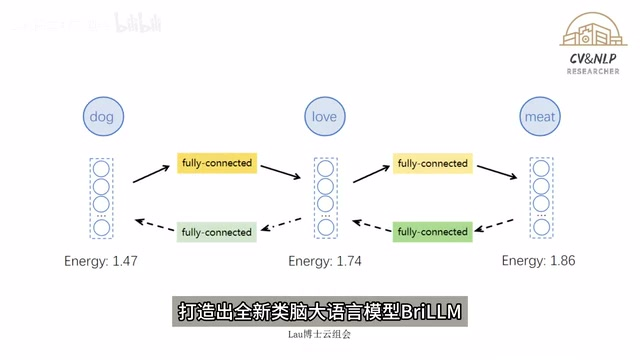
00:00:16–00:00:19 · 画面 00700:00:19–00:00:23 · 画面 008
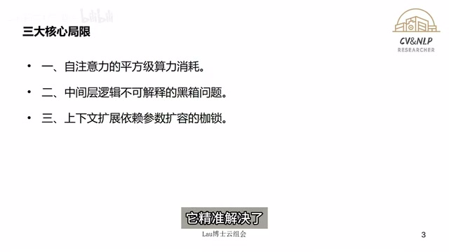
00:00:19–00:00:23 · 画面 00800:00:23–00:00:27 · 画面 009
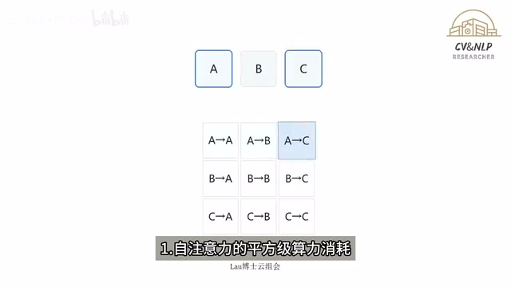
00:00:23–00:00:27 · 画面 00900:00:27–00:00:29 · 画面 010
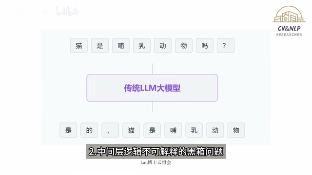
00:00:27–00:00:29 · 画面 010三上下文扩展依赖参数扩容的枷锁更关键的是它还能直接通过新增节点扩展视觉听觉模态这不只是对现有技术的修补而是 AI 向人类大脑学习的全新方式接下来十分钟我们将拆解 BriLLM 如何用信号全连接流动机制模拟大脑神经电信号传导云组会论文精读系列类脑大模型全新方式 BriLLM 欢迎来到力武博士的云组会
00:00:29–00:00:33 · 画面 011
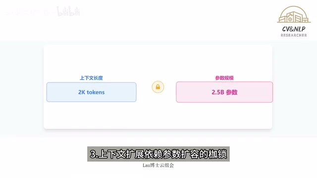
00:00:29–00:00:33 · 画面 01100:00:33–00:00:34 · 画面 012
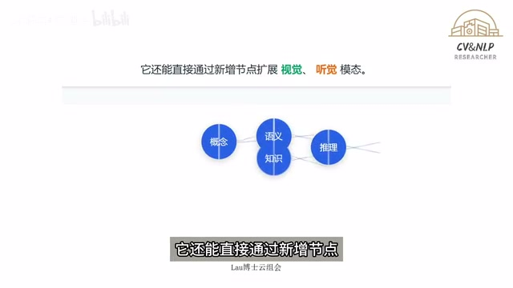
00:00:33–00:00:34 · 画面 01200:00:34–00:00:37 · 画面 013
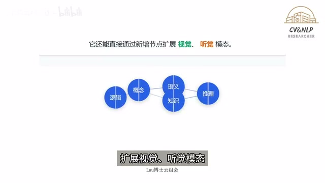
00:00:34–00:00:37 · 画面 01300:00:37–00:00:41 · 画面 014
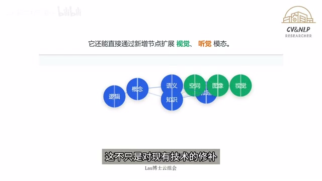
00:00:37–00:00:41 · 画面 01400:00:41–00:00:45 · 画面 015
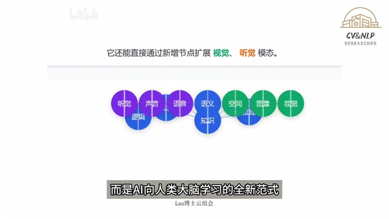
00:00:41–00:00:45 · 画面 01500:00:45–00:00:49 · 画面 016
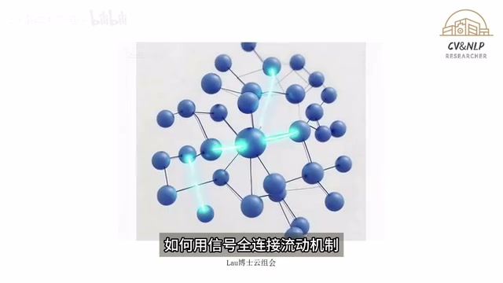
00:00:45–00:00:49 · 画面 01600:00:49–00:00:51 · 画面 017
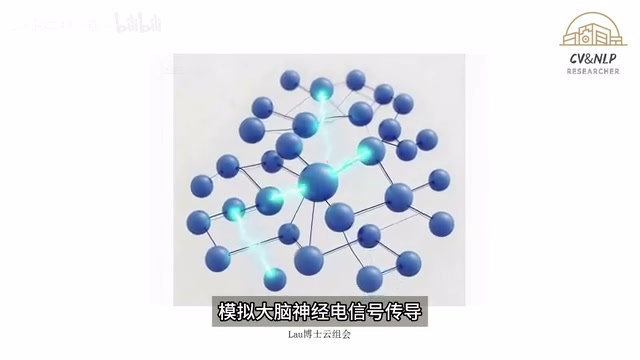
00:00:49–00:00:51 · 画面 01700:00:51–00:00:55 · 画面 018
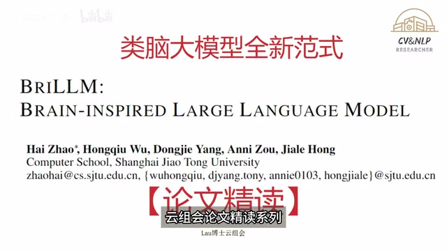
00:00:51–00:00:55 · 画面 01800:00:55–00:00:59 · 画面 019
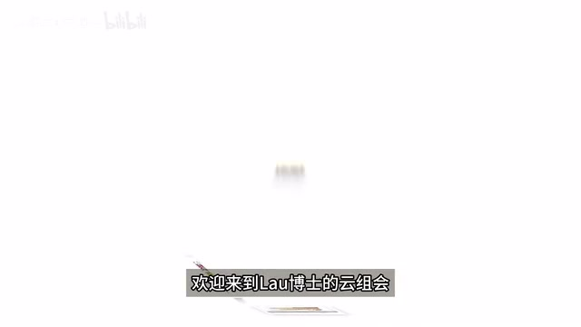
00:00:55–00:00:59 · 画面 019我每周都将至少有一篇高质量的论文精读发布出来相信在一系列的论文学习以后你就能成为人工智能领域的专家今天的大模型无论是 GPT 还是 Claude 都深陷三个核心困境第一个困境是缺乏可解释性当模型生成猫喜欢吃鱼时我们无法知道哪个是注意力头哪个隐藏成决定的这个结论就好像问一个人你为什么喜欢吃香菜
00:00:59–00:01:03 · 画面 020
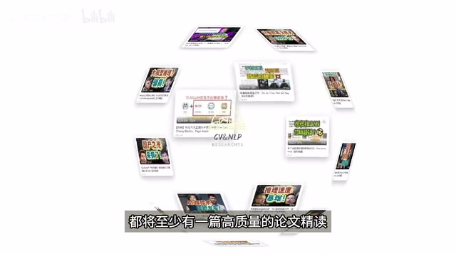
00:00:59–00:01:03 · 画面 02000:01:03–00:01:07 · 画面 021
00:01:03–00:01:07 · 画面 02100:01:07–00:01:11 · 画面 022
00:01:07–00:01:11 · 画面 02200:01:11–00:01:14 · 画面 023
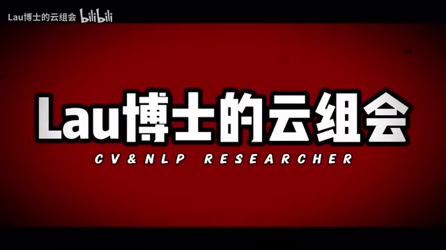
00:01:11–00:01:14 · 画面 02300:01:14–00:01:17 · 画面 024
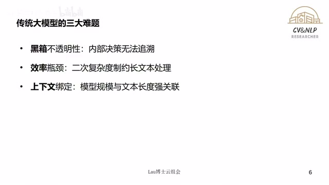
00:01:14–00:01:17 · 画面 02400:01:17–00:01:19 · 画面 025
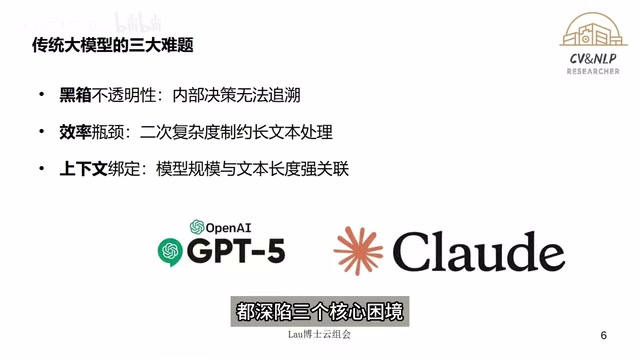
00:01:17–00:01:19 · 画面 02500:01:19–00:01:23 · 画面 026
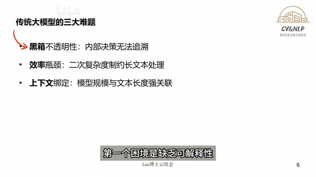
00:01:19–00:01:23 · 画面 02600:01:23–00:01:26 · 画面 027
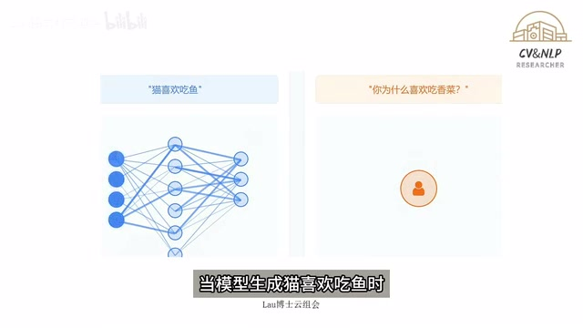
00:01:23–00:01:26 · 画面 02700:01:26–00:01:27 · 画面 028
00:01:26–00:01:27 · 画面 02800:01:27–00:01:28 · 画面 029
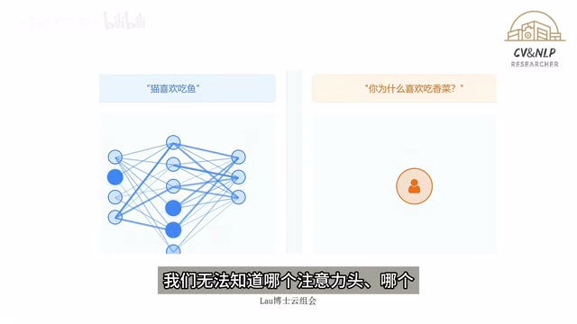
00:01:27–00:01:28 · 画面 02900:01:28–00:01:32 · 画面 030
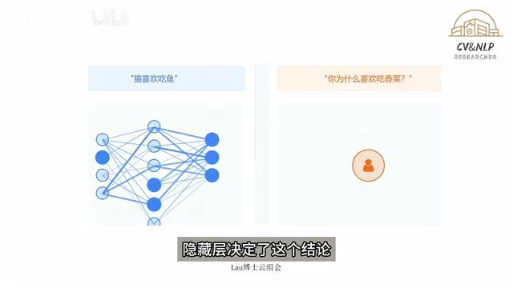
00:01:28–00:01:32 · 画面 03000:01:32–00:01:37 · 画面 031
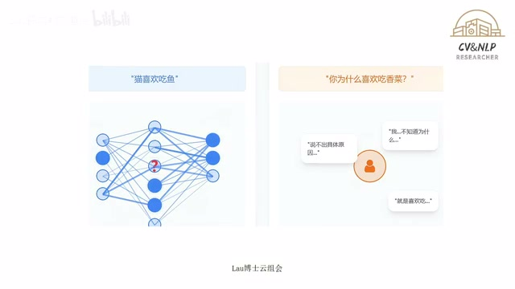
00:01:32–00:01:37 · 画面 031他只能说就是喜欢但是说不出背后的神经机制第二个困境是越长越慢的效率陷阱宣说我的注意力机制需要计算每个词与其他所有词的关联这就意味着处理一千字的文本的时间是处理一百字的一百倍想象一下你读一本一千页的书花的时间是读十页的一万倍这显然不符合人类的认知规律第三个困境是模型容量的枷锁
00:01:37–00:01:38 · 画面 032
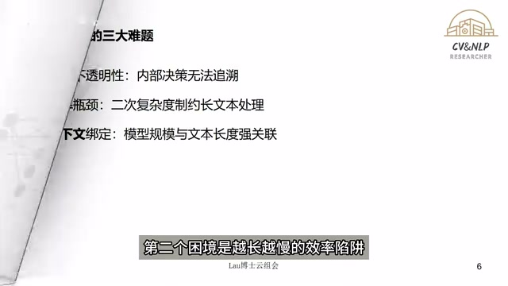
00:01:37–00:01:38 · 画面 03200:01:38–00:01:44 · 画面 033
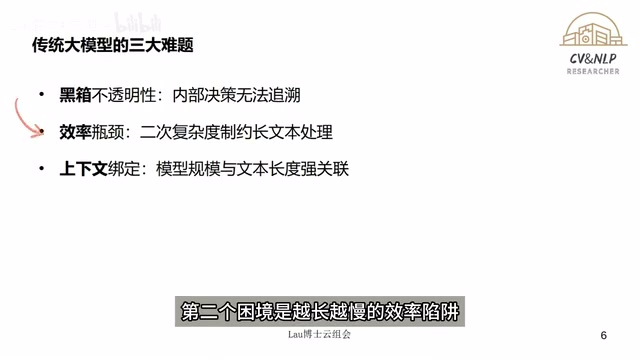
00:01:38–00:01:44 · 画面 03300:01:44–00:01:46 · 画面 034
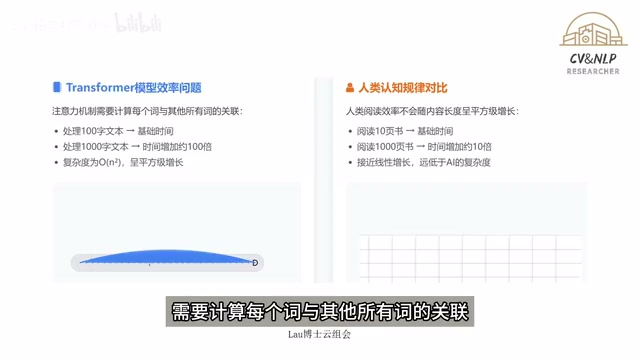
00:01:44–00:01:46 · 画面 03400:01:46–00:01:47 · 画面 035
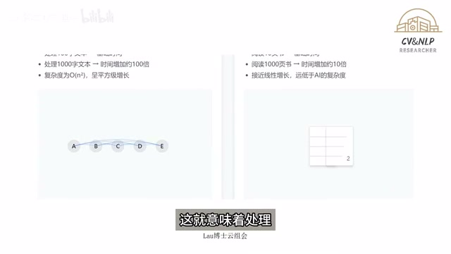
00:01:46–00:01:47 · 画面 03500:01:47–00:01:48 · 画面 036
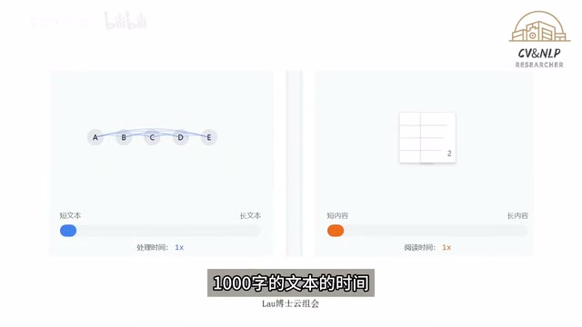
00:01:47–00:01:48 · 画面 03600:01:48–00:01:49 · 画面 037
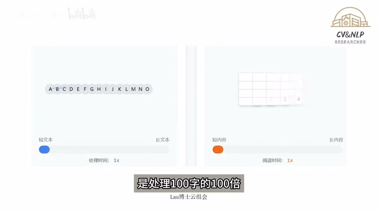
00:01:48–00:01:49 · 画面 03700:01:49–00:01:52 · 画面 038
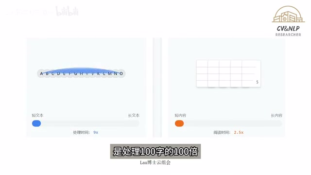
00:01:49–00:01:52 · 画面 03800:01:52–00:01:54 · 画面 039
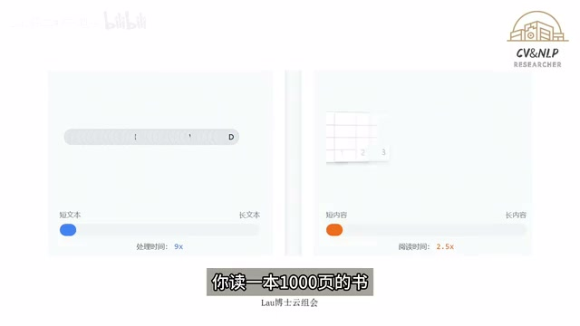
00:01:52–00:01:54 · 画面 03900:01:54–00:01:58 · 画面 040
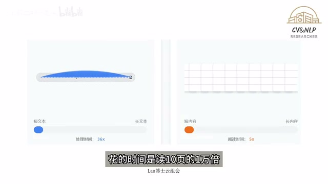
00:01:54–00:01:58 · 画面 04000:01:58–00:02:02 · 画面 041
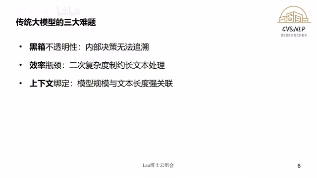
00:01:58–00:02:02 · 画面 041传统的模型要处理更长的文本必须同步的增加参数比如 GPT-5 的模型参数预计是 GPT-4 的 30 倍就像要装更多的水必须制造更大的桶增加参数优化注意力并不能够真正的解决这些问题 BriLLM 的过人之处在于它抛弃了传统的框架仿造了人类大脑进行的创新 BriLLM 的核心是 SiFu: Signal Fully-connected Flowing
00:02:02–00:02:06 · 画面 042
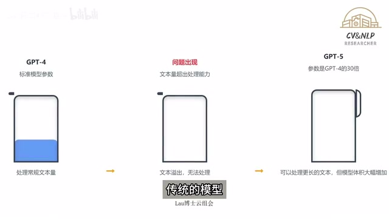
00:02:02–00:02:06 · 画面 04200:02:06–00:02:08 · 画面 043
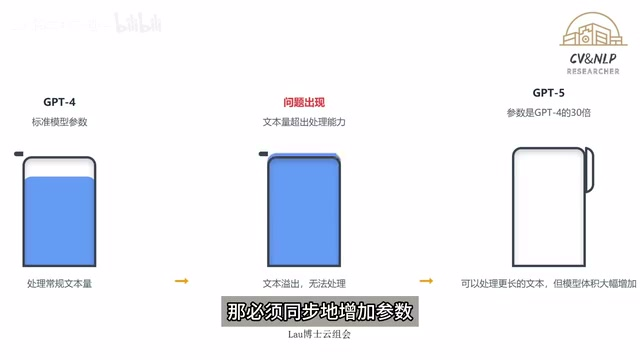
00:02:06–00:02:08 · 画面 04300:02:08–00:02:11 · 画面 044
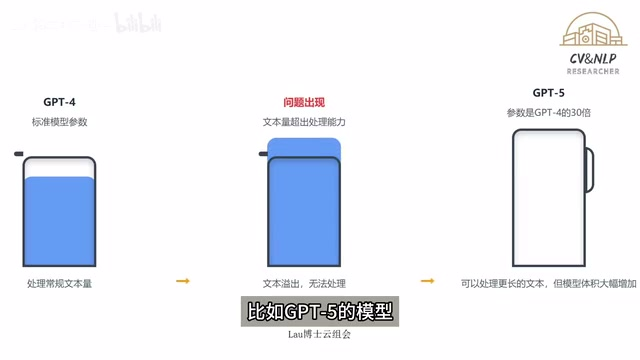
00:02:08–00:02:11 · 画面 04400:02:11–00:02:26 · 画面 045
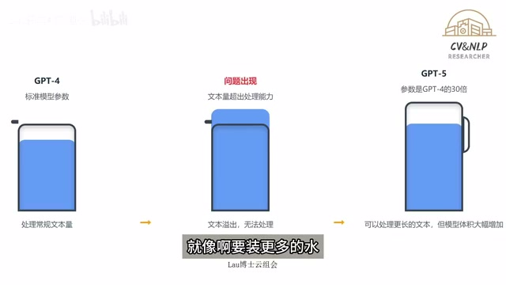
00:02:11–00:02:26 · 画面 04500:02:26–00:02:32 · 画面 046
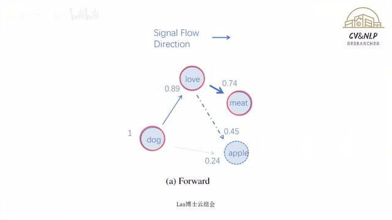
00:02:26–00:02:32 · 画面 046信号全连接流动机制它不是对 Transformer 的改进而是从零开始复刻大脑的宏观工作原理我们用一个补全任务直观的理解其三个关键设计第一静态语义映射每个词绑定专属的语义节点
00:02:32–00:02:36 · 画面 047
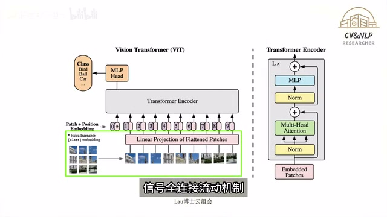
00:02:32–00:02:36 · 画面 04700:02:36–00:02:39 · 画面 048
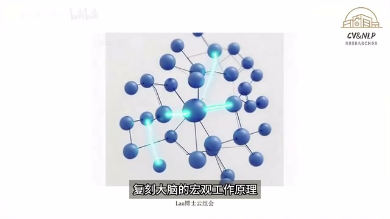
00:02:36–00:02:39 · 画面 04800:02:39–00:02:43 · 画面 049
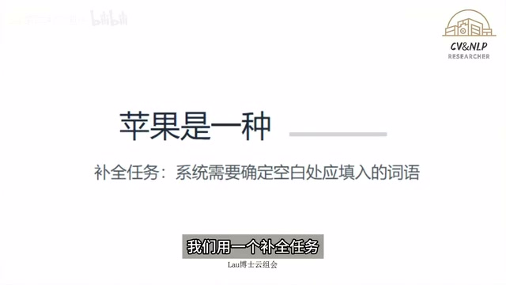
00:02:39–00:02:43 · 画面 04900:02:43–00:02:44 · 画面 050
00:02:43–00:02:44 · 画面 05000:02:44–00:02:48 · 画面 051
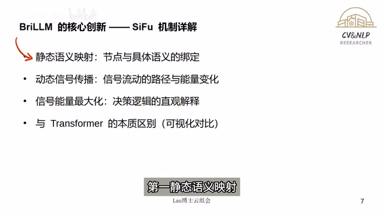
00:02:44–00:02:48 · 画面 051苹果的概念对应人脑大脑的特定区域水果对应的是另外一个区域功能互相不重点 BriLLM 里面每个词语的 token 都绑定一个语义的节点节点的功能固定且唯一苹果的节点仅存储和苹果相关的语义比如有圆形甜可食用水果的水果的节点仅存储可直接食用植物果实的这一类别的语义蔬菜节点
00:02:48–00:02:50 · 画面 052
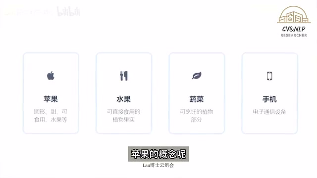
00:02:48–00:02:50 · 画面 05200:02:50–00:02:55 · 画面 053
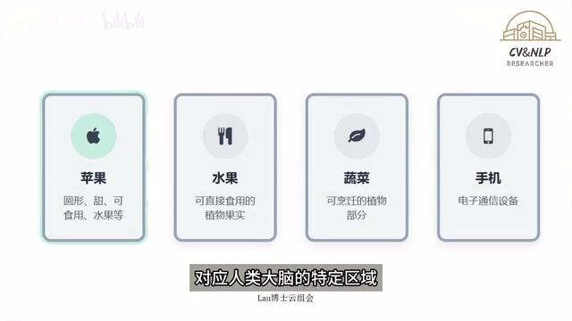
00:02:50–00:02:55 · 画面 05300:02:55–00:02:59 · 画面 054
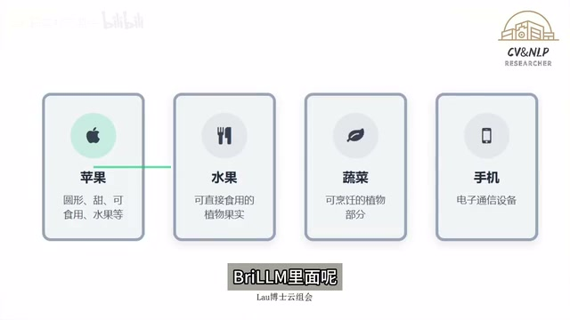
00:02:55–00:02:59 · 画面 05400:02:59–00:03:02 · 画面 055
00:02:59–00:03:02 · 画面 05500:03:02–00:03:07 · 画面 056
00:03:02–00:03:07 · 画面 05600:03:07–00:03:08 · 画面 057
00:03:07–00:03:08 · 画面 05700:03:08–00:03:12 · 画面 058
00:03:08–00:03:12 · 画面 05800:03:12–00:03:17 · 画面 059
00:03:12–00:03:17 · 画面 059仅存储可烹饪的植物部分的这一类别的语义手机节点仅存储电子通信设备相关的语义那具体是怎么实现的呢从技术的层面来看论文当中的图 3 展示了 BriLLM 的架构每个节点被构建为一个带有 GeLU 的激活函数的神经元层在训练的阶段通过特定算法调整神经元层的权重使其与特定的语义紧密的绑定
00:03:17–00:03:21 · 画面 060
00:03:17–00:03:21 · 画面 06000:03:21–00:03:25 · 画面 061
00:03:21–00:03:25 · 画面 06100:03:25–00:03:42 · 画面 062
00:03:25–00:03:42 · 画面 062第二动态信号的传播信号沿最强关联路径流动我们来看到图二笔节点之间通过边连接边的强度由训练数据中的词语的关联频率决定信号会沿主力最小的路径传播我们举一个例子来说明这个过程输入苹果是一种以后苹果的节点会被激活信号向所有关联的节点扩散
00:03:42–00:03:55 · 画面 063
00:03:42–00:03:55 · 画面 06300:03:55–00:03:58 · 画面 064
00:03:55–00:03:58 · 画面 06400:03:58–00:04:00 · 画面 065
00:03:58–00:04:00 · 画面 06500:04:00–00:04:02 · 画面 066
00:04:00–00:04:02 · 画面 06600:04:02–00:04:04 · 画面 067
00:04:02–00:04:04 · 画面 06700:04:04–00:04:05 · 画面 068
00:04:04–00:04:05 · 画面 068信号会优先流向连接最强的水果节点，强度值是 0.8；其次是食物节点，强度值是 0.6；最后是红色节点，强度值是 0.3。水果的节点接收到信号以后，进一步向香蕉、橙子等等的子节点扩散。但任务需要的是类别词，因此信号会在此处聚焦。最后水果的节点积累的信号能量最高，远超过蔬菜、手机等等的节点。这个过程是怎么做到的呢？
00:04:05–00:04:06 · 画面 069
00:04:05–00:04:06 · 画面 06900:04:06–00:04:07 · 画面 070
00:04:06–00:04:07 · 画面 07000:04:07–00:04:09 · 画面 071
00:04:07–00:04:09 · 画面 07100:04:09–00:04:10 · 画面 072
00:04:09–00:04:10 · 画面 07200:04:10–00:04:11 · 画面 073
00:04:10–00:04:11 · 画面 07300:04:11–00:04:14 · 画面 074
00:04:11–00:04:14 · 画面 07400:04:14–00:04:16 · 画面 075
00:04:14–00:04:16 · 画面 07500:04:16–00:04:20 · 画面 076
00:04:16–00:04:20 · 画面 07600:04:20–00:04:22 · 画面 077
00:04:20–00:04:22 · 画面 07700:04:22–00:04:25 · 画面 078
00:04:22–00:04:25 · 画面 07800:04:25–00:04:27 · 画面 079
00:04:25–00:04:27 · 画面 07900:04:27–00:04:30 · 画面 080
00:04:27–00:04:30 · 画面 08000:04:30–00:04:32 · 画面 081
00:04:30–00:04:32 · 画面 08100:04:32–00:04:35 · 画面 082
00:04:32–00:04:35 · 画面 082论文指出，信号传播通过全连接矩阵实现双向的传输。节点间的边被编码为一个权重矩阵，矩阵当中的值就代表着连接的强度。比如苹果到水果的权重就是 0.8。信号从节点 A 传递到节点 B 的时候，会先连接权重相乘，类似神经信号的突触之间传递时的衰减或是增强，然后再经过 GeLU 的激活函数处理。
00:04:35–00:04:38 · 画面 083
00:04:35–00:04:38 · 画面 08300:04:38–00:04:39 · 画面 084
00:04:38–00:04:39 · 画面 08400:04:39–00:04:41 · 画面 085
00:04:39–00:04:41 · 画面 08500:04:41–00:04:42 · 画面 086
00:04:41–00:04:42 · 画面 08600:04:42–00:04:44 · 画面 087
00:04:42–00:04:44 · 画面 08700:04:44–00:04:45 · 画面 088
00:04:44–00:04:45 · 画面 08800:04:45–00:04:48 · 画面 089
00:04:45–00:04:48 · 画面 08900:04:48–00:04:50 · 画面 090
00:04:48–00:04:50 · 画面 09000:04:50–00:04:54 · 画面 091
00:04:50–00:04:54 · 画面 09100:04:54–00:04:57 · 画面 092
00:04:54–00:04:57 · 画面 09200:04:57–00:05:01 · 画面 093
00:04:57–00:05:01 · 画面 09300:05:01–00:05:03 · 画面 094
00:05:01–00:05:03 · 画面 094为了保留序列的顺序例如苹果是一种的语序信号中会嵌入位置边以确保苹果在聚首的信号与在聚尾的信号是能够被准确的区分的在传播的过程当中信号会自动的选择权重总和第三信号能量最大化选最活跃的节点作为输出
00:05:03–00:05:07 · 画面 095
00:05:03–00:05:07 · 画面 09500:05:07–00:05:10 · 画面 096
00:05:07–00:05:10 · 画面 09600:05:10–00:05:14 · 画面 097
00:05:10–00:05:14 · 画面 09700:05:14–00:05:15 · 画面 098
00:05:14–00:05:15 · 画面 09800:05:15–00:05:16 · 画面 099
00:05:15–00:05:16 · 画面 09900:05:16–00:05:20 · 画面 100
00:05:16–00:05:20 · 画面 10000:05:20–00:05:22 · 画面 101
00:05:20–00:05:22 · 画面 10100:05:22–00:05:24 · 画面 102
00:05:22–00:05:24 · 画面 10200:05:24–00:05:26 · 画面 103
00:05:24–00:05:26 · 画面 103模型最终的输出是信号能量最高的节点在苹果是一种的案例当中水果的节点的能量远高于其他候选的节点因此被选中这类似人类的决策的过程当你看到苹果时水果的概念就在脑袋中最活跃因此会脱口而出苹果是一种水果
00:05:26–00:05:28 · 画面 104
00:05:26–00:05:28 · 画面 10400:05:28–00:05:31 · 画面 105
00:05:28–00:05:31 · 画面 10500:05:31–00:05:32 · 画面 106
00:05:31–00:05:32 · 画面 10600:05:32–00:05:34 · 画面 107
00:05:32–00:05:34 · 画面 10700:05:34–00:05:36 · 画面 108
00:05:34–00:05:36 · 画面 10800:05:36–00:05:39 · 画面 109
00:05:36–00:05:39 · 画面 10900:05:39–00:05:40 · 画面 110
00:05:39–00:05:40 · 画面 11000:05:40–00:05:43 · 画面 111
00:05:40–00:05:43 · 画面 11100:05:43–00:05:45 · 画面 112
00:05:43–00:05:45 · 画面 11200:05:45–00:05:47 · 画面 113
00:05:45–00:05:47 · 画面 113这种逻辑与 Transformer 有本质的区别 Transformer 靠注意力矩阵计算每个词的权重过程像是解方程结果无法拆解 BriLLM 靠的是信号的流动竞争过程就像水向低出流每个节点的能量变化随时都是可以实时观测的
00:05:47–00:05:48 · 画面 114
00:05:47–00:05:48 · 画面 11400:05:48–00:05:49 · 画面 115
00:05:48–00:05:49 · 画面 11500:05:49–00:05:53 · 画面 116
00:05:49–00:05:53 · 画面 11600:05:53–00:05:54 · 画面 117
00:05:53–00:05:54 · 画面 11700:05:54–00:05:55 · 画面 118
00:05:54–00:05:55 · 画面 11800:05:55–00:05:59 · 画面 119
00:05:55–00:05:59 · 画面 11900:05:59–00:06:02 · 画面 120
00:05:59–00:06:02 · 画面 12000:06:02–00:06:05 · 画面 121
00:06:02–00:06:05 · 画面 121通过这个案例可以看到 SiFu 的机制的核心是模拟大脑的语义分区与信号的传播用节点复刻老区的功能用信号流动复刻神经电活动最终实现可解释高效率通用化的智能具体是怎么实现的呢信号能量的计算与选择遵循论文当中提到的能量最大化准则
00:06:05–00:06:06 · 画面 122
00:06:05–00:06:06 · 画面 12200:06:06–00:06:08 · 画面 123
00:06:06–00:06:08 · 画面 12300:06:08–00:06:12 · 画面 124
00:06:08–00:06:12 · 画面 12400:06:12–00:06:13 · 画面 125
00:06:12–00:06:13 · 画面 12500:06:13–00:06:14 · 画面 126
00:06:13–00:06:14 · 画面 12600:06:14–00:06:18 · 画面 127
00:06:14–00:06:18 · 画面 12700:06:18–00:06:21 · 画面 128
00:06:18–00:06:21 · 画面 12800:06:21–00:06:48 · 画面 129
00:06:21–00:06:48 · 画面 129每个节点的能量等于节点激活值乘以累计的连接权重这里的累计连接权重指的是从输入节点到该节点所有路径的权重之和在预测的时候模型会逐个便利所有的候选点比如水果蔬菜手机等等分别去计算它们的能量值在训练的过程当中通过交叉熵损失函数对这些节点的权重和连接强度进行优化强化正确的路径比如说苹果到水果的能量
00:06:48–00:06:57 · 画面 130
00:06:48–00:06:57 · 画面 13000:06:57–00:07:01 · 画面 131
00:06:57–00:07:01 · 画面 131同时要弱化错误的路径，比如苹果到手机的能量。说到这里，再给不熟悉我们的同学介绍一下本频道六博士云组会的自律打造一站式人工智能交流平台，用尽可能好理解的语言让每位同学都能了解 AI 最前沿的内容。
00:07:01–00:07:02 · 画面 132
00:07:01–00:07:02 · 画面 13200:07:02–00:07:11 · 画面 133
00:07:02–00:07:11 · 画面 13300:07:11–00:07:21 · 画面 134
00:07:11–00:07:21 · 画面 134除了视频以外，也欢迎大家加入云组会的知识星球。我们做了三件事：第一，系统性的拆解了热门领域的学习路线，帮你的避开无效的努力；第二，每日更新精选文献解读，省去 80%的检索时间；三，建立专家学者交流群，不定期掉落福利，直接与专家学者互动交流，深度参与选题。云组会欢迎各位同学的加入。
00:07:21–00:07:22 · 画面 135
00:07:21–00:07:22 · 画面 13500:07:22–00:07:26 · 画面 136
00:07:22–00:07:26 · 画面 13600:07:26–00:07:29 · 画面 137
00:07:26–00:07:29 · 画面 13700:07:29–00:07:33 · 画面 138
00:07:29–00:07:33 · 画面 13800:07:33–00:07:37 · 画面 139
00:07:33–00:07:37 · 画面 13900:07:37–00:07:39 · 画面 140
00:07:37–00:07:39 · 画面 14000:07:39–00:07:40 · 画面 141
00:07:39–00:07:40 · 画面 14100:07:40–00:07:43 · 画面 142
00:07:40–00:07:43 · 画面 142作者分别用 100M tokens 的中英文维基百科的数据训练了 BriLLM 的早期版本。虽然参数只有 1 到 2B，大约是 GPT-1 的十分之一，却展现了巨大的威力。第一 ，稳定的学习能力，可以看到训练的损失持续的下降，如图无所示，说明 SiFu 的机制能够有效的捕捉到语言的规律。
00:07:43–00:07:58 · 画面 143
00:07:43–00:07:58 · 画面 14300:07:58–00:08:08 · 画面 144
00:07:58–00:08:08 · 画面 144第二，基础的生成能力的媲美早期的 GPT。那在文本的续写任务当中呢，我们可以看到表 3，它能够完成幽冥路一座幽冥路能够呢正确的关联到古籍的别名，阿根廷的探戈起源于阿根廷或是乌拉圭，那能够正确的关联文化的常识。那这些案例都说明啊，即使是参数更少那老启发的
00:08:08–00:08:37 · 画面 145
00:08:08–00:08:37 · 画面 145架构能够实现经典模型的核心功能。100-200B 参数的 BriLLM 可以处理 4 万 Token 的上下文，而模型的规模不需要扩大。这对于传统模型是不可以想象的。6GPT-3 处理 1 万 Token 就需要参数是处理 1000 字的 100 倍，而 BriLLM 的规模始终是不变的。第四 ，稀疏训练像大脑一样高效连接。
00:08:37–00:08:42 · 画面 146
00:08:37–00:08:42 · 画面 14600:08:42–00:08:47 · 画面 147
00:08:42–00:08:47 · 画面 14700:08:47–00:09:08 · 画面 148
00:08:47–00:09:08 · 画面 148人类的大脑有 861 亿的神经元，但每个神经元仅连接少数的邻居，就是稀疏连接。BriLLM 也借鉴了这一点，通过共享低频词的信号路径，将理论上 169 亿的参数压缩到了 20 亿左右。这个是中文模型的表现，效率提升 90%却不会影响性能，就像用更少的神经连接实现了类似的思考能力。用一张表就能看清 BriLLM 的颠覆性突破。
00:09:08–00:09:25 · 画面 149
00:09:08–00:09:25 · 画面 14900:09:25–00:09:34 · 画面 150
00:09:25–00:09:34 · 画面 150首先是这些优势带来了三个实际的价值。第一个是低资源的部署，一到两 B 的参数就能实现基础的功能，非常适合手机以及边缘设备。长文本的处理轻松能处理书籍论文等超长文本，不需要去做分段。可解释的 AI 医疗法律等领域需要追溯到决策的依据，解决了 AI 黑箱的风险。
00:09:34–00:09:39 · 画面 151
00:09:34–00:09:39 · 画面 15100:09:39–00:09:42 · 画面 152
00:09:39–00:09:42 · 画面 15200:09:42–00:10:10 · 画面 153
00:09:42–00:10:10 · 画面 153更重要的是，它为 AGI 提供了新的路径。传统的模型像精密的计算器，只能去做一些预设的任务，而 BriLLM 像简化的大脑，具备了通用智能的潜力。通过节点的扩展，可以轻松的加入图像语音等等的模态，实现了跨领域的理解。
00:10:10–00:10:11 · 画面 154
00:10:10–00:10:11 · 画面 154BriLLM 目前还处于早期的阶段，但已经指明了三个重要的方向。第一个是多模态的扩展，计划了加入图像语音等节点，实现了类似大脑的跨模态整合的能力。就像人类看到苹果的图像的时候会自动的激活
00:10:11–00:11:09 · 画面 155
00:10:11–00:11:09 · 画面 155苹果的文字和味觉的记忆。第二，神经的可塑性模拟，借鉴大脑用尽废退的原理，让节点间的信号路径随学习动态的调整，常用的路径强化，罕见的路径弱化，实现了终身学习不遗忘旧的知识。第三，具身智能的探索。开发结合感知运动能力的版本，让模型像人类一样通过行动学习，比如通过虚拟机器人的触觉理解坚硬的行业。对于科研工作者的启示尤为珍贵。这篇论文就证明了 AI 的突破不一定是来自于更大的参数，而可能是来自更像大脑的设计。当传统的路径遇到瓶颈的时候，向生物智能学习或许是通向 AGI 的最短路径。
00:11:09–00:11:09 · 画面 156
00:11:09–00:11:09 · 画面 156转写与来源说明 · 0 个自动复核提示
保留 27 个原始语音片段，0 个片段触发自动复核提示。提示仅用于定位可能的术语、重复或识别问题，不等于已确认错误。
讲解画面为源视频截图（640×360），不是可编辑 PPT 文件。全片按每秒 2 帧扫描内容变化，逐步展开页保留；连续动画保留代表画面。清晰度受源视频限制。
原视频：paper/合集_2026-10-16_论文精读/突破Transformer！交大首发「类人脑」大模型BriLLM.mp4
SHA-256：73c866f3e848934bd716fb4235abaeadf92e91488c48a9383f8d6432075c1cac
全文按视频语音与画面制作。原论文可从上方链接下载；完整资料包保留全文、原始逐字稿、字幕和校对记录。